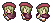

■2011-11-26 (土) 13周年ゲー5 [片道勇者]▼
13周年記念ゲーム「片道勇者」のプロトタイプを作成しています。
【13周年ゲーム企画 『片道勇者』 今回の完成部分】
・カウントタイムターンシステム調整 ・キャラクターのパラメータを実装した ・攻撃が可能になった（スキル処理の基礎部分作成） ・敵のAIを実装した。範囲内に入ると反応して追ってくるタイプ。 ・画面サイズは640x480に決定 ・合成器で暫定主人公画像Cを作った、ちょっとお気に入り  → 詩人とかそんな感じのキャラになりそうです。 主人公の画像（タイプ）は、スタート時に選択可能です。 |
【今後しばらくの作業】
・メニューの武器・防具に強化を反映できるようにする （動画中「風刃の～」のように。現状はダミー） ・罠を起動する処理を作る ・アイテムを拾う処理を作る ・装備変更処理を作る ・スキル使用処理を作る ・アイテム使用処理を作る ・自動マップ生成機能を実装（おそらく非常に大変） ・NPCイベント処理を実装 ・各種スキルの実装 ・買い物システムを作る |
ここまでが基本システムで、そこから先はスキル・アイテム・
モンスター・イベント・マップのバリエーション作りです。
一番大変なのは、きっとバランス調整になるでしょう。
久しぶりに、自由にゲームを作ってみると、
開発能力が、だいぶ向上している印象を感じました。
でも、これまでの長い行程で少しヘトヘトになってるのか、
やっと自由になれたのに、どうにも心に元気がない状況です。
ずっとピリピリしてたので、燃え尽きたというやつかもしれません。
体は元気なのに、心だけがなんだか闇夜です。
システムやプログラムを作ることはまだできるのですけれど、
文章を読んでもさっぱり頭に入ってこないのに始まり、
なんだか元気がない日々を送っているような状況です。
ここ一年、ほとんど休まず、ずっとはき出し続けて
色んなものがカラカラになってるので、そろそろ、
思い切ってインプットや練習したりする時期のような気がしています。
たくさん物語を読んだり、たまにはいっぱい絵を描いてみたり、
映画を見てみたり、色々勉強してみたり。
ここ一年で、たくさんの経験をしました。
昔は見ても分からなかったこと、読んでも分からなかったことも、
今見れば、きっと大きな勉強になると思います。
長く続けるためにも、ときどき感動するものや
笑えるものに触れたりして、燃料補給したい気持ちです。
2011-11-26 (土)  カテゴリ: 片道勇者
カテゴリ: 片道勇者
 カテゴリ: 片道勇者
カテゴリ: 片道勇者